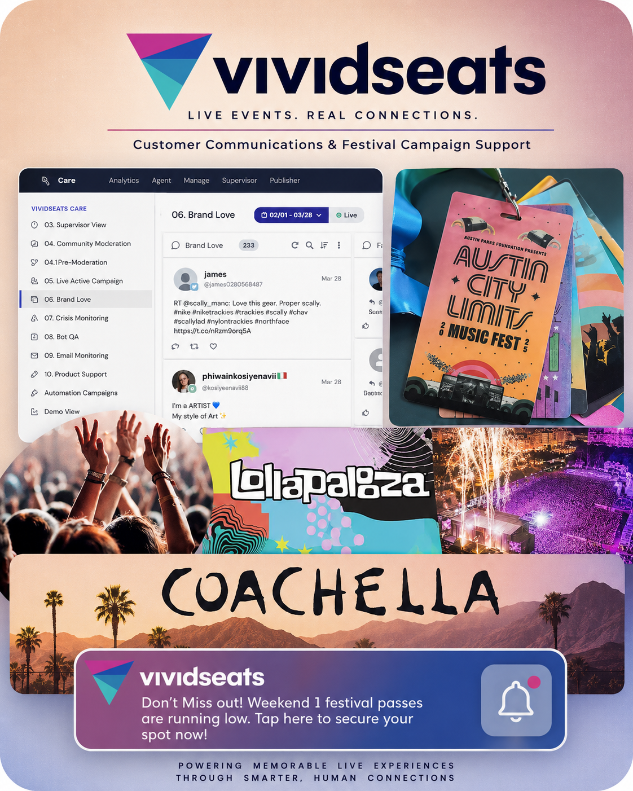
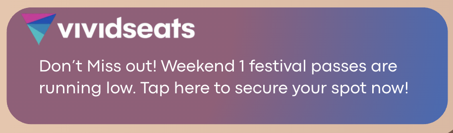
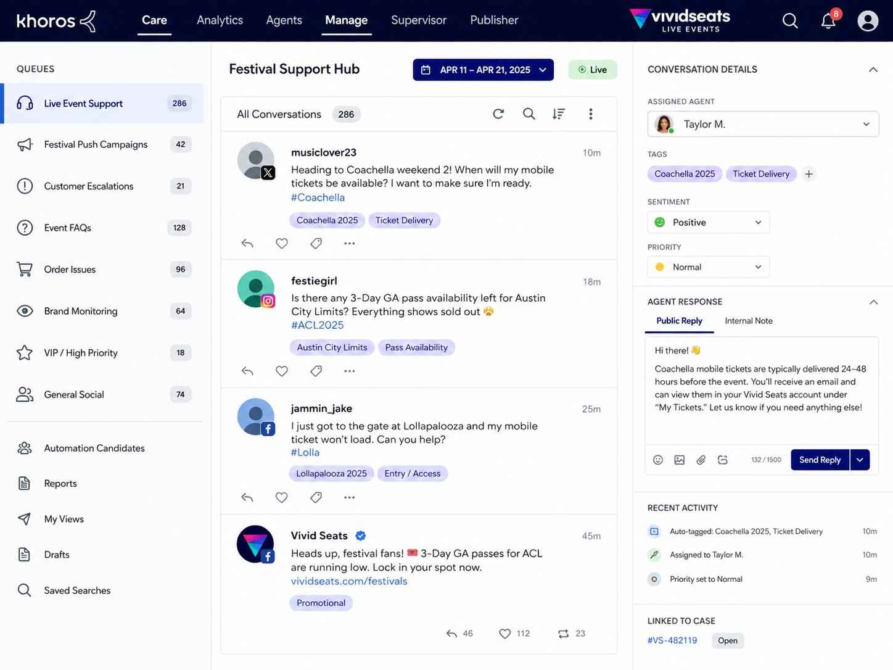
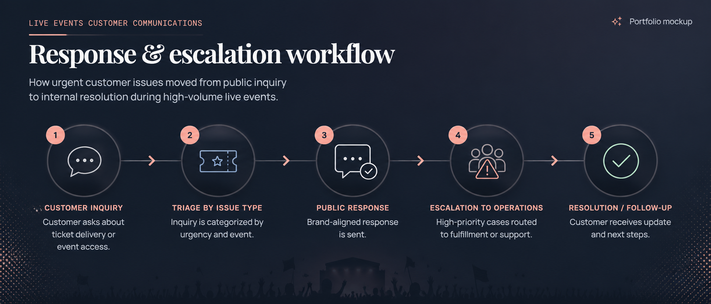

CASE STUDY / 02
Major Live Event
Customer Communications
A high-volume customer communications project supporting major live events, including Coachella, Lollapalooza, and Austin City Limits, where customers needed fast answers about ticket delivery, order status, event access, and pass availability.
Major festivals created high volumes of customer questions around delivery timing, order updates, event access, and limited pass availability.
Support customers quickly while coordinating with fulfillment, sales, and operations teams to resolve urgent issues before event deadlines.
Khoros · Meta Business Suite · Push notifications · Internal escalation workflows
Fast support
during peak demand.
estimated customer interactions supported during peak festival periods
teams coordinated across customer care, sales, fulfillment, and operations
My role
- Managed high-volume customer conversations through Khoros and Meta Business Suite.
- Wrote brand-aligned responses for ticket delivery, order, and event-access questions.
- Created promotional push-notification copy for limited festival-pass availability.
- Identified and escalated urgent customer issues to operations and fulfillment teams.
- Helped ensure orders were completed before event deadlines.
- Supported teammates as a subject matter resource during peak event periods.
- Monitored recurring questions and emerging event-related issues.



